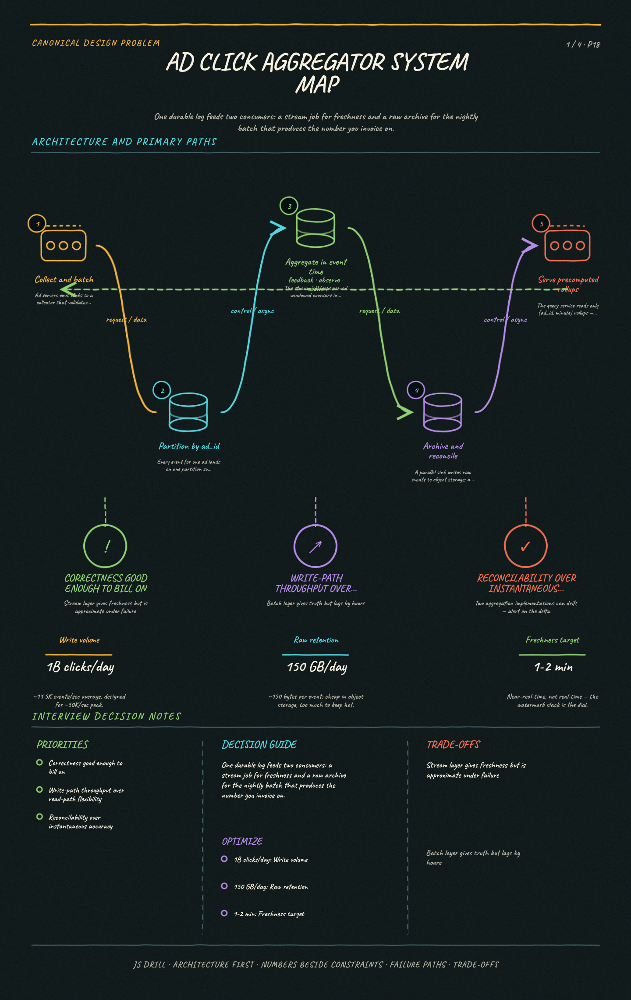
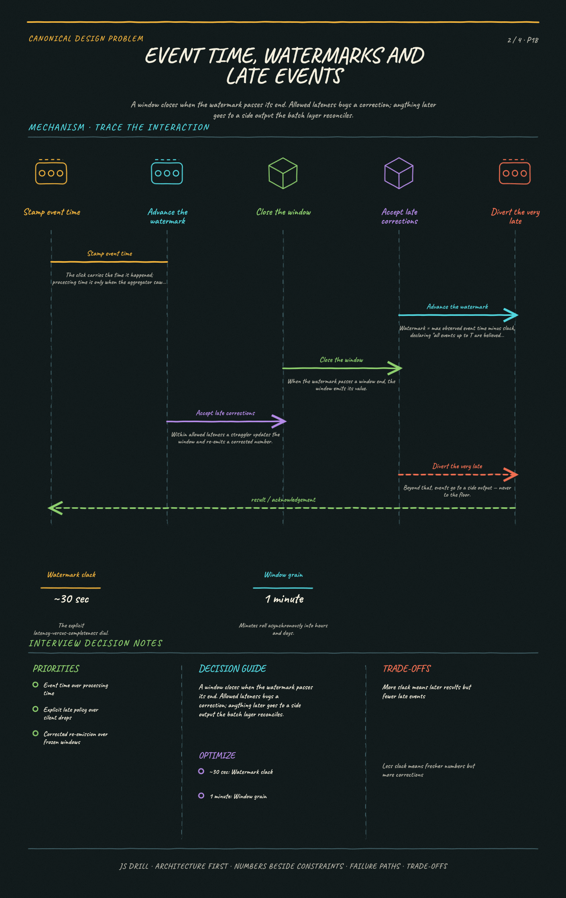
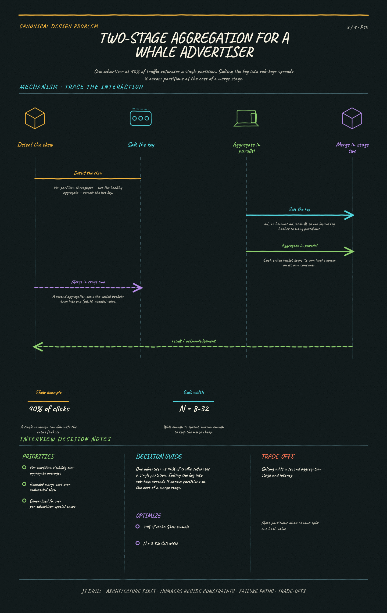
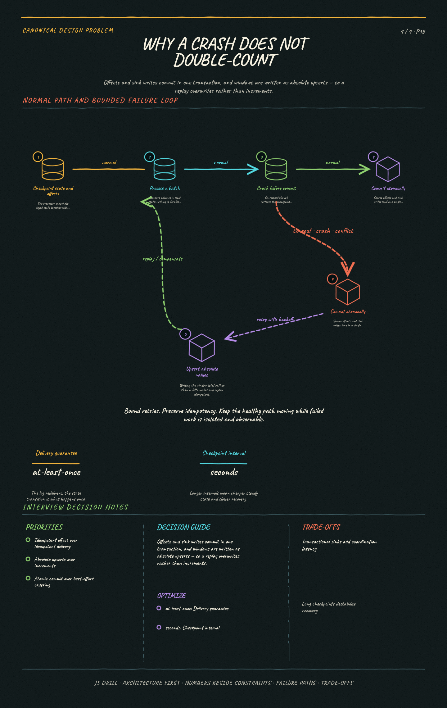

Ingest a firehose of ad-click events and serve near-real-time aggregated counts that are accurate enough to bill on. The signature challenge is counting correctly under at-least-once delivery, out-of-order events, and advertiser hot keys.
Canonical Design Problems10 questions
Results carried by this link
The brief
Functional requirements
Ingest click events (ad_id, user_id, timestamp, region, device); query aggregated counts over a time range at minute/hour/day grain; return top-N ads over the last M minutes.
Consumers are advertiser dashboards AND billing — billing is what raises the bar above 'analytics good enough'.
No double counting and no silent loss: reconcilable to an authoritative number even if the fast path is briefly approximate.
Out of scope unless asked: click-fraud detection, the ad auction itself, conversion attribution.
Scale & constraints
~1B clicks/day · ~2M active ads → ~11.5K writes/s average, design for ~50K/s peak
Raw events at ~150 B → ~150 GB/day: fine for object storage, too much to keep hot
Aggregates are the small side: 2M ads × 1,440 minutes ≈ 58 GB/day at minute grain, far less in practice
Retention: minutes for a week, hours for 90 days, days forever
Aggregates visible within ~1–2 minutes; <100ms dashboard reads
Key ideas
Partition the event log by ad_id so every event for an ad lands on one partition and aggregates in local state — no shuffle on the hot path.
Aggregate in event-time tumbling windows driven by watermarks, not processing time; otherwise a consumer lag spike silently reassigns clicks to the wrong minute.
Exactly-once is achieved end-to-end, not per-hop: checkpoint the aggregation state and commit source offsets and sink writes in the same transaction.
A whale advertiser makes one partition hot. Salt the key into ad_id:0..N for a two-stage aggregation, then merge the salted buckets at query time.
Money changes the consistency bar: keep raw events in object storage and run a nightly batch recompute as the authority, with the stream as the fast path.
Late events need an explicit policy — allowed lateness, then a side output that the batch layer reconciles. Silently dropping them is a billing bug.
Serve queries from precomputed per-minute rollups; roll minutes into hours and days asynchronously so the read path never scans raw events.
Diagrams
4 study sheets · 4 authored diagrams (source below, rendered in the app).

Ad click aggregator system mapSystem mapEstablish the component map and the two-consumer split before any mechanism sheet goes deep.Open the full-size image

Event time, watermarks and late eventsMechanismShow why the bucket a click lands in is decided by when it happened, not when it arrived.Open the full-size image

Two-stage aggregation for a whale advertiserMechanismMake it obvious that adding partitions cannot split a single key, and show the shape that can.Open the full-size image

Why a crash does not double-countFailureShow the precise crash window and the two properties that close it.Open the full-size image
High-level architecture mermaidoverview
One durable log feeds two consumers: a stream job for freshness and an archive for the batch job that produces the billable number.
flowchart LR
AD(["Ad Servers"]) --> COL["Collector<br/>validate + batch"]
COL --> K[["Kafka<br/>partitioned by ad_id"]]
K --> F["Stream Aggregator<br/>event-time windows"]
K --> S3[("Object Store<br/>raw events")]
F --> AGG[("Aggregate Store<br/>(ad_id, minute)")]
S3 --> B["Nightly Batch<br/>recompute"]
B -->|"overwrite finalized"| AGG
AGG --> Q["Query Service"]
Event time, watermarks, and late events mermaidmechanism
A window closes when the watermark passes its end — allowed lateness buys a correction, and anything later goes to a side output rather than the floor.
flowchart TD
E1["click @10:00:59<br/>arrives 10:02:30"] --> W{"watermark<br/>past 10:01?"}
W -->|"no — window open"| A["add to 10:00 bucket"]
W -->|"yes, within<br/>allowed lateness"| R["update + re-emit<br/>corrected window"]
W -->|"beyond lateness"| SO["side output"]
SO --> BATCH["batch layer<br/>reconciles"]
A --> EMIT[("aggregate store")]
R --> EMIT
Two-stage aggregation for a whale advertiser mermaidmechanism
Adding partitions cannot split a single key; salting it into N sub-keys can, at the cost of a merge step.
flowchart LR
H(["ad_42 — 40% of traffic"]) --> SALT["salt: ad_42:0..N"]
SALT --> P0["partition 0<br/>local count"]
SALT --> P1["partition 1<br/>local count"]
SALT --> P2["partition 2<br/>local count"]
P0 --> M["stage 2<br/>merge by ad_id"]
P1 --> M
P2 --> M
M --> AGG[("(ad_42, minute)")]
Why a crash doesn't double-count mermaidfailure
Offsets and sink writes commit in one transaction, and windows are written as absolute upserts — so a replay overwrites rather than increments.
flowchart TD
C["checkpoint N<br/>state + offsets"] --> P["process batch"]
P --> X{"crash before<br/>commit?"}
X -->|"yes"| RB["restore checkpoint N<br/>replay from its offset"]
RB --> UP
X -->|"no"| CM["commit offsets +<br/>sink in one txn"]
CM --> UP["upsert (ad_id, minute)<br/>= absolute value"]
UP --> OK(["same number either way"])
Questions 10
Positions 1–10 of the code. Open questions are answered out loud and self-graded, so their characters are Y / p / n rather than option letters.
Scope an ad click aggregator. What are the functional requirements, and what non-functional targets actually drive the design?
Points a strong answer hits:
Functional: ingest click events (ad_id, user_id, timestamp, region, device); query aggregated click counts for an ad over a time range at minute/hour/day granularity; return top-N ads by clicks over the last M minutes.
Clarify the consumer: this feeds advertiser dashboards AND billing. Billing is what raises the correctness bar above 'analytics good enough'.
Non-functional: aggregates visible within ~1-2 minutes (near-real-time, not real-time); very high write throughput; read latency <100ms for dashboards.
Correctness: no double counting and no silent loss — reconcilable to an authoritative number even if the fast path is briefly approximate.
State the scale explicitly (e.g. ~1B clicks/day, ~2M active ads) so estimation and partitioning choices have something to bite on.
Explicitly out of scope unless asked: click fraud detection, ad serving/auction itself, attribution to conversions.
Model answer: Functionally we ingest click events and serve aggregated counts per ad over a time range, plus a top-N query. The thing I'd pin down first is who consumes it: if this is only a dashboard, eventual approximate counts are fine; if it feeds billing, I need the numbers to be reconcilable and defensible. I'll assume billing. So: ~1B clicks/day across ~2M ads, aggregates fresh within a couple of minutes, dashboard reads under 100ms, and — the real constraint — no double counting and no silent drops, even across consumer restarts and late-arriving events.
Work the back-of-envelope numbers: write QPS, peak, storage per day for raw events, and storage for the aggregates.
Points a strong answer hits:
Average write QPS: 1e9 / 86,400 ≈ 11.5K clicks/sec.
Peak: assume 3-5x daily average for traffic concentration → ~50K events/sec design target.
Raw event size ~100-200 bytes (ids, timestamp, region, device) → 1e9 × 150B ≈ 150 GB/day raw, ~55 TB/yr before compression. Cheap in object storage, not in a hot DB.
Aggregates are far smaller: 2M ads × 1,440 minutes/day × ~20B ≈ 58 GB/day at minute granularity — and only for ads with traffic, so realistically much less.
Roll up: keep minute granularity ~7 days, hourly ~90 days, daily indefinitely. That bounds the aggregate store while preserving useful history.
Note the asymmetry: writes are a firehose, reads are comparatively tiny. The design should optimize the write path and precompute for reads.
Model answer: 1B clicks/day is about 11.5K writes/sec average; I'd design for ~50K/sec peak. Raw events at ~150 bytes are roughly 150 GB/day — fine for object storage, too much to keep hot. The aggregates are the small side: 2M ads × 1,440 minutes is ~58 GB/day at minute grain, and far less in practice since most ads are idle. I'd retain minutes for a week, hours for 90 days, and days forever. The key shape is that writes dominate massively and reads are precomputed lookups, so all the engineering goes into the ingest and aggregation path.
Design the API — both the ingest path and the query path.
Points a strong answer hits:
Ingest is usually not a public REST call per click: the ad server emits to a collector that batches into the log. POST /events with a batch body, or a direct producer into Kafka.
Each event carries a client-generated unique event_id — this is what makes downstream deduplication possible.
Query: GET /ads/{ad_id}/clicks?from=&to=&granularity=minute|hour|day returning a time series of buckets.
Top-N: GET /ads/top?window=5m&limit=100®ion= — served from a separate precomputed structure, not by scanning all ads.
Both query endpoints should return the window's completeness state (e.g. finalized: false for the current partial minute) so the dashboard doesn't render a half-filled bucket as a drop.
Model answer: On ingest I'd avoid a synchronous per-click API — the ad server writes to a collector that batches into the log, and every event carries a client-generated event_id so we can dedupe later. For reads, GET /ads/{ad_id}/clicks?from&to&granularity returns a bucketed series, and GET /ads/top?window=5m&limit=100 serves top-N from a precomputed structure. I'd include a finalized flag per bucket, because the in-progress minute is always partial and a dashboard that plots it unqualified looks like a traffic cliff every 60 seconds.
Sketch the high-level architecture and name what each stage is responsible for.
Points a strong answer hits:
Ad server / client → collector service (validates, enriches, batches) → durable partitioned log (Kafka).
Log partitioned by ad_id so all events for an ad are ordered on one partition and can be aggregated against local state.
Stream processor (Flink/Spark Streaming) consumes partitions, maintains per-ad windowed counters in checkpointed local state, and emits completed windows.
Aggregate store: a wide-column or time-series DB keyed by (ad_id, minute); query service reads only from here.
A parallel sink archives raw events to object storage (S3) — the input to the batch reconciliation layer and to any future recompute.
Rollup jobs fold minute buckets into hour and day buckets asynchronously.
Model answer: Ad servers emit to a collector that batches into Kafka, partitioned by ad_id. A Flink job consumes those partitions and keeps per-ad windowed counters in checkpointed local state, emitting each completed minute into an aggregate store keyed by (ad_id, minute). The query service only ever reads that store, never raw events. In parallel, a sink archives every raw event to S3 — that's what makes a nightly recompute possible. Rollups fold minutes into hours and days on a schedule. The shape is: durable log absorbs the burst, stream layer gives speed, object store plus batch gives truth.
Why partition the event log by ad_id rather than round-robin or by user_id?
A Round-robin would exceed Kafka's maximum partition count for this volume
B All events for one ad land on one partition, so the aggregator can maintain that ad's counter in local state without a cross-node shuffle correct
C Partitioning by ad_id guarantees events arrive in strict global timestamp order
Duser_id partitioning would violate GDPR requirements for click data
Why: The aggregation is grouped by ad_id, so co-locating an ad's events on one partition means one consumer owns that ad's counter and can keep it in local state — no network shuffle per event, and no distributed coordination on the hot path. Round-robin or user_id would scatter one ad's clicks across every partition, forcing a repartition step before aggregation. It does NOT give global time ordering (that's why watermarks exist), and partition count is unrelated.
Deep dive: the log gives at-least-once delivery, so a consumer restart can replay events. How do you avoid double counting in a system that bills advertisers?
Points a strong answer hits:
Name the failure precisely: the processor counts a batch, writes the aggregate, then crashes before committing its source offset — on restart it reprocesses and counts again.
Solution A — idempotent aggregation: dedupe by event_id within the window using a set or bloom filter in the processor's keyed state, so a replayed event is a no-op.
Solution B — transactional/exactly-once processing: the processor checkpoints its state and commits source offsets and sink writes atomically (two-phase commit), so a restart resumes from a consistent snapshot with no reprocessing gap or overlap.
Note the honest limit: 'exactly-once' is exactly-once *effect*, not exactly-once *delivery*. Events are still delivered more than once; the state transition happens once.
The sink must cooperate — either it participates in the transaction, or writes are idempotent (upsert (ad_id, minute) = value rather than += delta).
Writing absolute window values instead of increments is the cheapest form of idempotence: replaying a window overwrites with the same number.
Model answer: The concrete failure is: count a batch, write the aggregate, crash before committing the offset — on restart those events replay and get counted twice. Two fixes, and I'd use both. First, make the sink write idempotent: emit the window's absolute value as an upsert on (ad_id, minute) rather than an increment, so replaying a window overwrites with the same number instead of doubling it. Second, use the processor's exactly-once mode — checkpoint the keyed state and commit source offsets together with sink writes in one transaction, so recovery resumes from a consistent snapshot. Worth saying out loud that this is exactly-once *effect*, not delivery: events still arrive twice, we just make the second one a no-op.
One advertiser's campaign generates 40% of all clicks, saturating a single partition and its consumer. What is the standard fix?
A Increase the partition count — more partitions will spread that ad's events across them
B Salt the key into ad_id:0..N, aggregate the salted buckets in parallel, and sum them at query or in a second aggregation stage correct
C Switch the log's partitioner to round-robin for all keys
D Route the hot advertiser to a dedicated Kafka cluster
Why: Adding partitions doesn't help: hash(ad_id) is a single value, so every event for that ad still maps to exactly one partition no matter how many exist. Salting splits the hot key into N sub-keys that hash to different partitions, each aggregated independently, then merged — a two-stage aggregation. Round-robin for everything destroys the local-state property that makes the whole design work. A dedicated cluster is operational whack-a-mole that doesn't generalize to the next whale.
Deep dive: an event generated at 10:00:59 arrives at 10:02:30 because of a mobile client retry. Which minute does it count toward, and how does the system decide when a window is done?
Points a strong answer hits:
Distinguish event time (when the click happened, stamped by the client/collector) from processing time (when the aggregator saw it). Bill on event time — processing time would let a consumer lag spike shift revenue between minutes.
Windows are keyed by event time, so this click belongs to the 10:00 bucket even though it arrived during 10:02.
Watermarks declare progress: 'I believe I have seen all events with event time <= T'. A window closes when the watermark passes its end.
Watermarks are heuristic — typically max-observed-event-time minus a slack (e.g. 30s), so they trade latency against completeness.
Allowed lateness keeps a window's state alive past close so slightly-late events can still update it and re-emit a corrected value.
Beyond allowed lateness, route to a side output / dead-letter stream rather than dropping — the batch layer folds those in. Silently dropping late clicks is a billing bug an advertiser will eventually notice.
Client timestamps can't be trusted absolutely (clock skew, spoofing); stamp at the collector or clamp implausible values.
Model answer: It counts toward the 10:00 bucket, because windows are keyed by event time — if I keyed on processing time, a consumer lag spike would move revenue from one minute to another, which is indefensible for billing. The window closes when the watermark passes its end, and the watermark is a heuristic: max event time seen minus some slack like 30 seconds. That slack is the explicit latency-versus-completeness dial. I'd keep allowed lateness on top of that so a straggler can still update and re-emit the corrected window, and anything later than that goes to a side output rather than the floor — the nightly batch job folds it back in. Dropping late clicks silently is the kind of bug an advertiser finds before you do.
The stream layer is approximate under failure. How do you produce a number you're willing to invoice on?
Points a strong answer hits:
Keep every raw event in object storage, partitioned by ingest date — cheap, immutable, and replayable.
Run a nightly batch job over the raw events that recomputes each (ad, minute/hour/day) from scratch. Batch has no watermark pressure, so it sees all late events.
Treat the batch result as authoritative and overwrite the streamed aggregates for finalized periods; the stream serves 'live, subject to revision'.
This is the lambda-architecture split: speed layer for freshness, batch layer for truth. Name the cost — two implementations of the same aggregation logic that can drift.
Alternative worth mentioning: kappa architecture, where you simply replay the same stream job over retained log history, keeping one implementation.
Alert on the delta between stream and batch: a persistent divergence is the early warning that the stream path has a bug.
Model answer: I keep every raw event in S3 and run a nightly batch recompute over it. Batch isn't under watermark pressure, so it sees the late events the stream had to cut off, and I treat its output as authoritative — it overwrites the streamed values for finalized periods while the stream keeps serving the live, revisable number. That's the lambda split, and the honest cost is two implementations of the same aggregation that can drift; the mitigation is to alert on the stream-versus-batch delta, which doubles as a bug detector. If I wanted one implementation instead, kappa is the alternative: keep long log retention and just replay the same stream job over history.
Staff-level wrap-up: what breaks at 10x, and what would you monitor to know the system is healthy?
Points a strong answer hits:
Consumer lag is the master health signal — rising lag means aggregates are stale and watermarks are advancing on incomplete data.
Partition skew: monitor per-partition throughput, not just aggregate, or a whale advertiser hides inside a healthy average.
At 10x, the collector and log scale horizontally, but per-key state size grows — watch the processor's state backend (RocksDB) and checkpoint duration; long checkpoints eventually exceed the interval and destabilize recovery.
Top-N cannot be computed by scanning all ads at scale — use a per-window heap of the top K, or a sketch (Count-Min / Space-Saving) if approximate is acceptable.
Kafka retention must exceed the maximum time you might need to replay; if a bad deploy corrupted a day of aggregates, retention shorter than a day means the raw archive is the only path back.
Multi-region: aggregate locally per region and merge, rather than shipping the firehose cross-region — bandwidth and latency both argue for local pre-aggregation.
Alert on the batch-versus-stream reconciliation delta, late-event side-output volume, and window emission latency.
Model answer: The signal I'd watch above all others is consumer lag, because rising lag means watermarks are advancing over data that hasn't arrived — the aggregates go quietly wrong rather than loudly missing. I'd monitor per-partition throughput too, since a whale advertiser disappears inside a healthy average. At 10x the collector and log scale out fine, but the processor's keyed state grows and checkpoint duration is the thing that bites: once checkpoints approach the interval, recovery gets fragile. Top-N stops being scannable, so it becomes a per-window top-K heap or a Count-Min sketch if approximation is acceptable. Cross-region, I'd pre-aggregate locally and merge rather than shipping the firehose. And I'd alert on the stream-versus-batch delta and the late-event side-output volume — those two catch correctness regressions that throughput dashboards never show.
Reading the s= code
If the URL you opened has an s= parameter, it is a result set: one character per question, in the order the questions appear on this page. Uppercase means credit, lowercase means no credit. The letter is the option index shown here — A is the first option listed.
Character
Meaning
A B C D
multiple choice — picked this option, correct
a b c d
multiple choice — picked this option, wrong
Y
open / typed / fill-in — got it
p
open — partial credit
n
open / typed / fill-in — missed
-
not attempted
One segment: every question on this page, in order.
The order of questions and options on this page is fixed and never changes, which is what makes position alone enough to identify a question. Nothing about the code is stored anywhere — it lives only in the URL its owner chose to share.
{kind=link}
{kind=link}
{kind=link}
{kind=link}